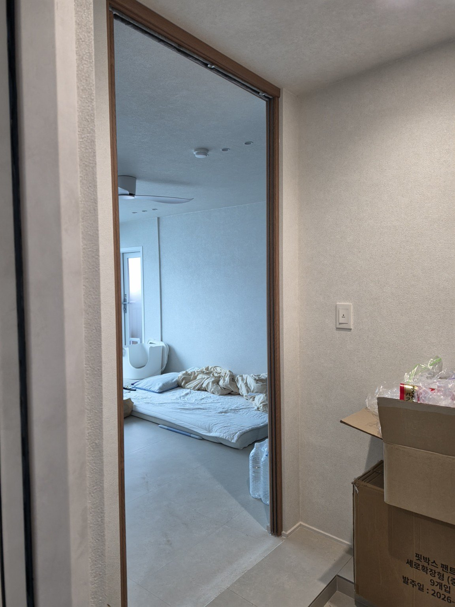
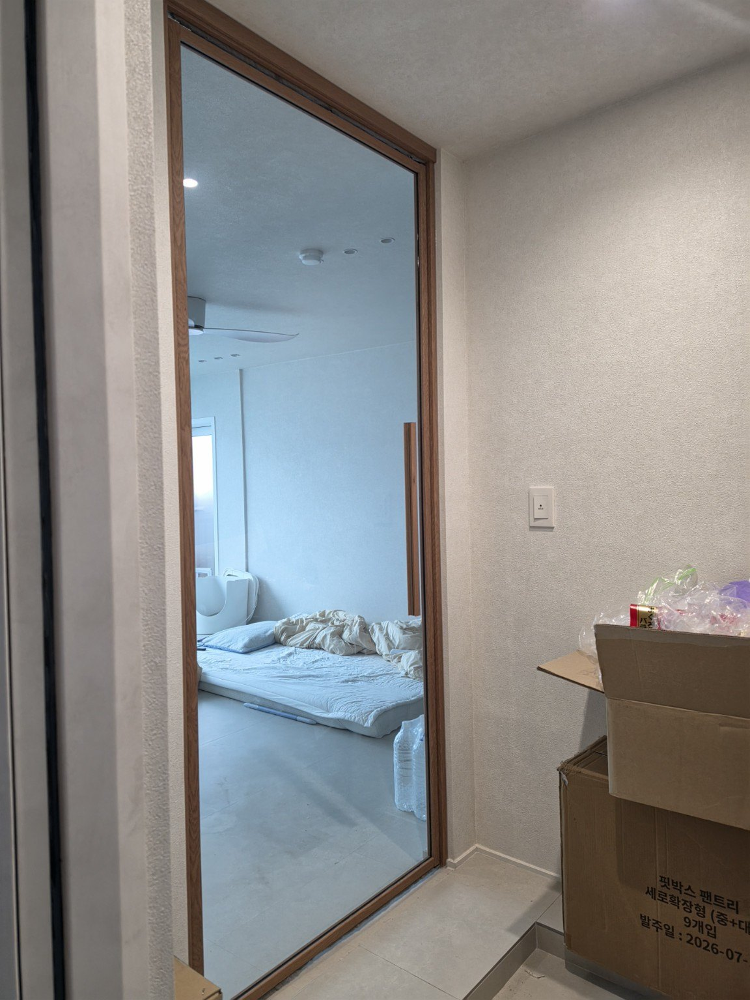
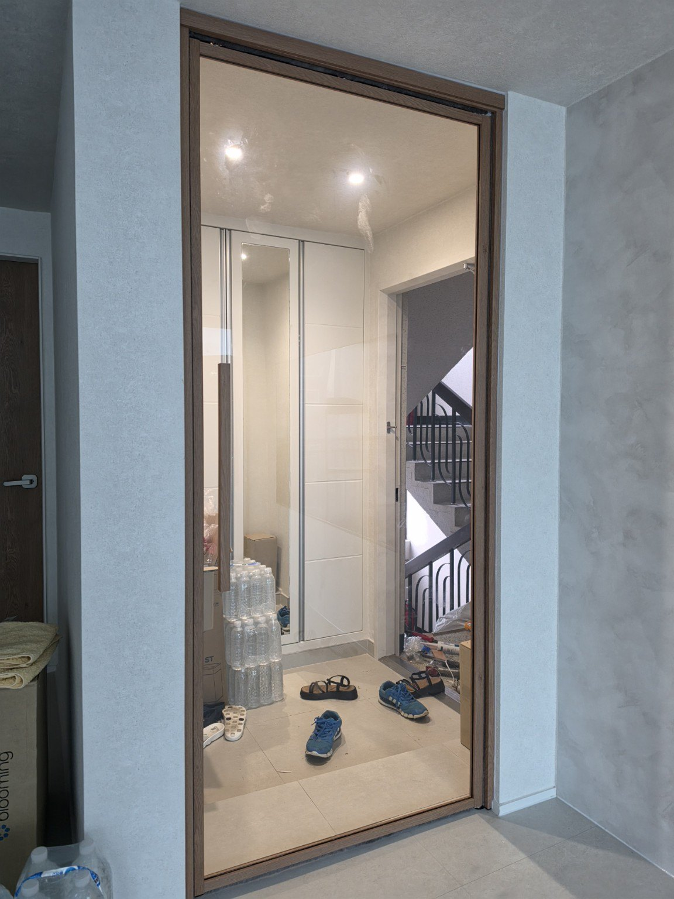
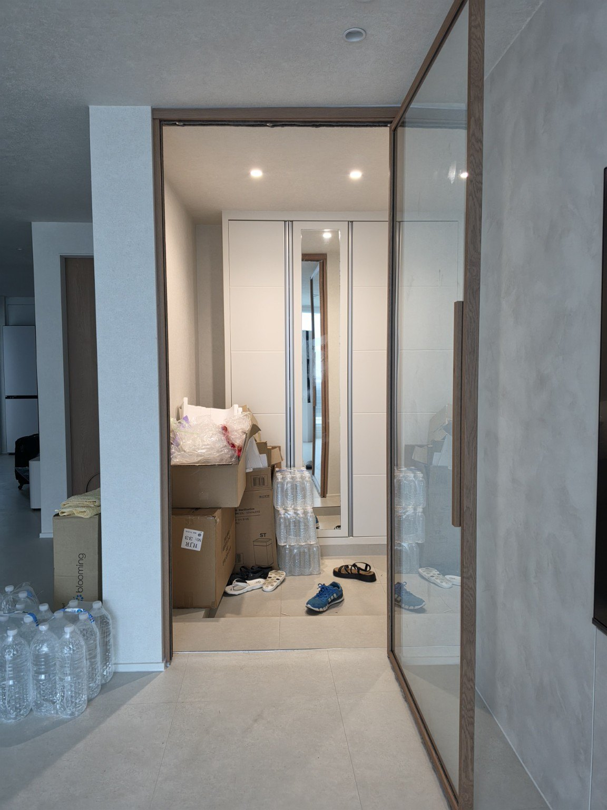
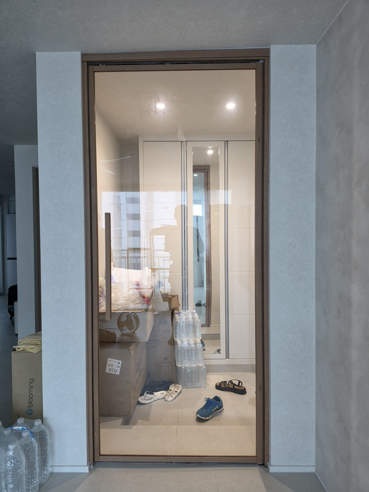

현관 구조를 살린 1짝 양방향 여닫이 중문
이번 현장은 현관에서 실내로 이어지는 출입구에 1짝 양방향 여닫이 중문을 맞춤 시공했습니다. 문짝을 여러 장으로 나누지 않고 넓은 한 장의 도어로 구성해 17평 공간에서도 시야가 복잡해 보이지 않도록 했습니다.
프레임은 영림 184번 색상을 적용했습니다. 현장의 밝은 벽과 바닥에 우드톤 프레임이 자연스럽게 어우러지며, 투명 강화유리를 사용해 문을 닫은 상태에서도 현관과 실내 사이의 시야와 빛이 이어지도록 구성했습니다.
양방향 여닫이 방식은 현관 안쪽과 실내 쪽에서 출입할 때 양쪽 방향으로 문을 열 수 있는 것이 특징입니다. 중문 형태와 문짝 크기는 같은 평형이라도 실제 현관 폭과 벽체 위치, 생활 동선에 따라 달라질 수 있어 현장에 맞춰 결정하는 것이 중요합니다.
시공 전·후 사진






구로동 현관중문 묻고 답하기
어떤 현관중문을 시공했나요?
영림 184번 색상과 투명 강화유리를 적용한 1짝 양방향 여닫이 현관중문입니다.
1짝 양방향 여닫이 중문은 어떤 방식인가요?
한 장의 문짝을 사용하면서 출입 방향에 따라 양쪽 방향으로 열 수 있도록 구성한 방식입니다.
투명 강화유리를 사용하면 어떤 느낌인가요?
시야와 빛이 이어져 중문을 닫아도 공간이 답답해 보이지 않도록 하는 데 도움이 됩니다.
영림 184번 색상은 어떻게 보이나요?
이번 현장에서는 밝은 실내에 자연스러운 우드톤 포인트를 주는 모습입니다.
17평 아파트도 맞춤 시공이 가능한가요?
네. 실제 현관 폭과 벽체, 출입 동선을 확인해 현장에 맞는 구성을 상담합니다.